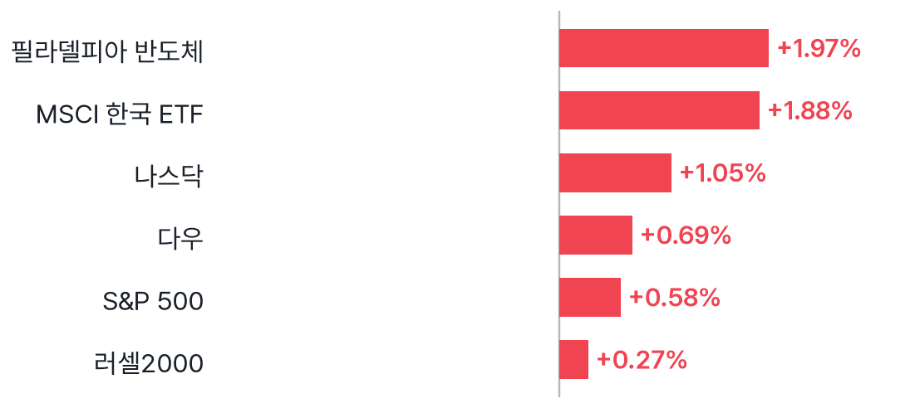
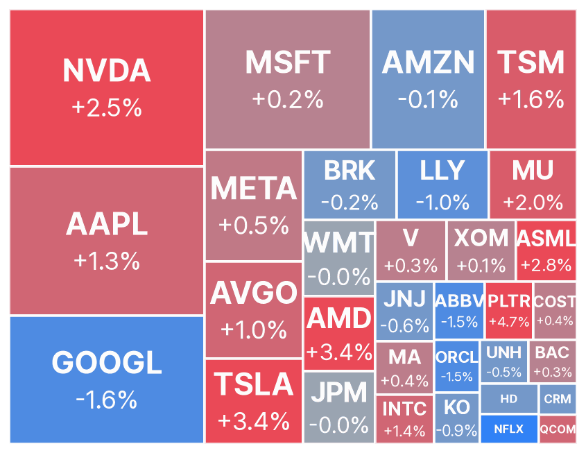
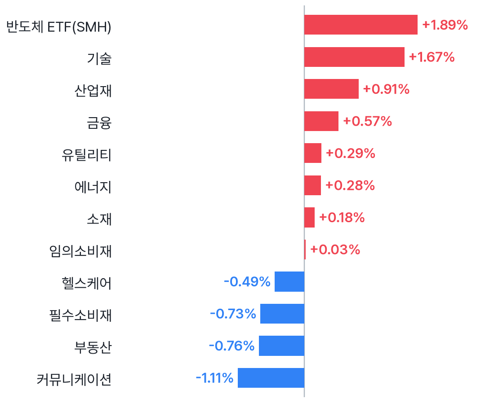
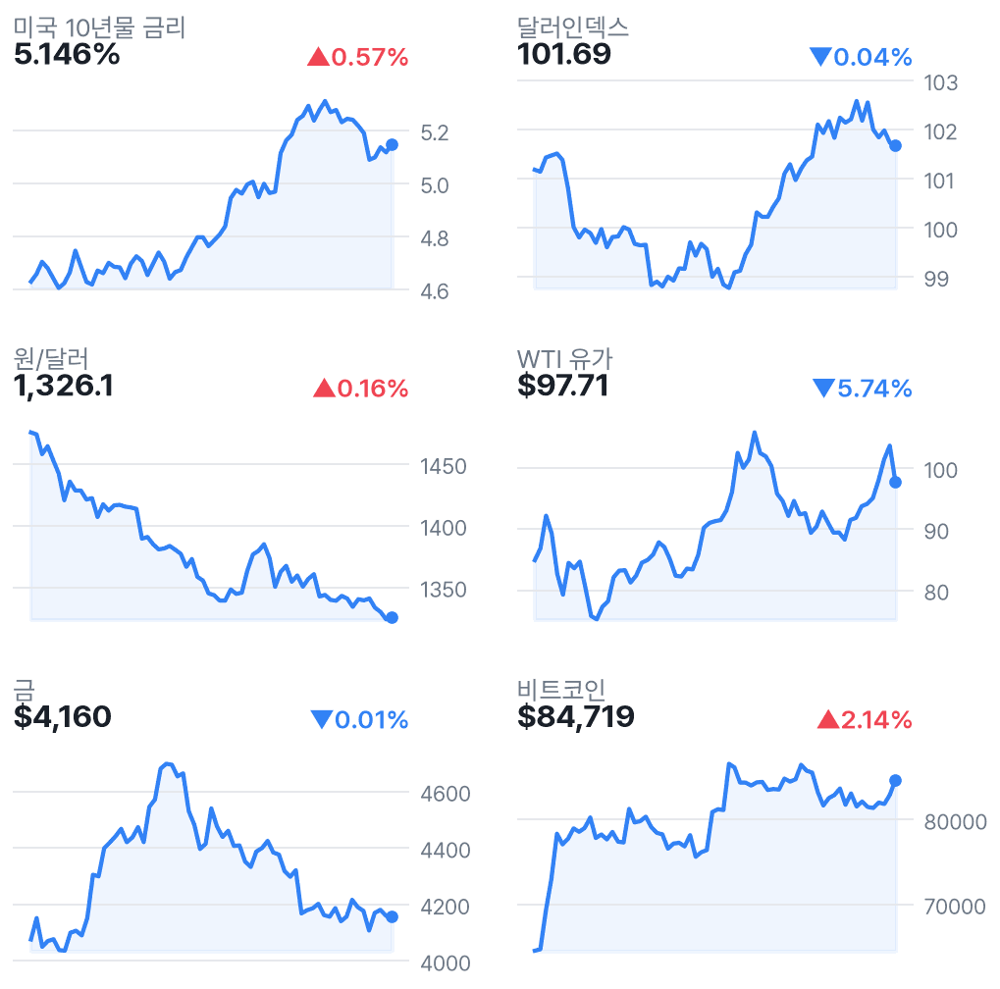
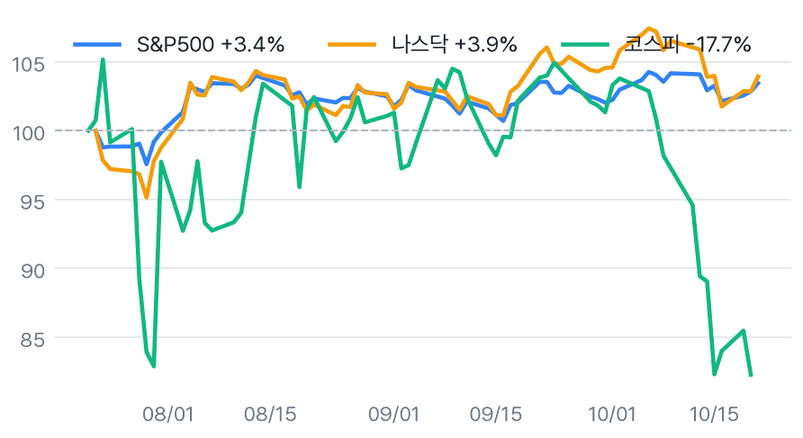

나스닥 1.05%↑, 스페이스X 호실적에 AI주 반등
✅ 핵심 요약
- 스페이스X 호실적이 AI주 반등 촉발, 나스닥 +1.05% — 수집 기사 기준
- 엔비디아 +2.54%·AMD +3.36%, 반도체 지수 +1.97%로 기술주 주도
- 장후 메타 +3.22% vs 테슬라 -2.61%·램리서치 -5.60%로 실적 반응 차별화
- EWY +1.88%는 국내장 우호 신호, 미 10년물 5.146%·장비주 약세는 부담
📊 주요 지표
S&P 500
7,757.17
▲0.58%
나스닥
26,702.86
▲1.05%
다우
52,856.09
▲0.69%
필라델피아 반도체
11,505.56
▲1.97%
VIX
16.68
▼3.64%
미국 10년물
5.146%
▲0.57%
원/달러
1,326.1
▲0.16%
달러인덱스
101.69
▼0.04%
WTI
$97.71
▼5.74%
금
$4,160
▼0.01%
비트코인
$84,719
▲2.14%
EWY(한국 ETF)
$156.88
▲1.88%
🧭 시장 해석
수집 기사들은 스페이스X 호실적을 기술주 반등 배경으로 꼽았다. 나스닥은 1.05%, 반도체는 1.97% 상승했다. 다만 넷플릭스는 5.31% 하락해 실적별 차별화가 뚜렷했다.
EWY 1.88% 상승은 국내 반도체 심리에 우호적이다. 그러나 램리서치 시간외 5.60% 하락과 미 10년물 5.146%는 부담 요인이다. 전일 코스피 3.29% 반등이 이어질지는 외국인 수급과 반도체 장비주의 반응을 확인할 필요가 있다.
정규장 반등과 장후 실적은 구분
메타는 매출 예상 상회·강한 가이던스 보도와 함께 시간외 3.22% 상승했다. 테슬라는 정규장 3.41% 상승 후 시간외 2.61% 하락했고, 램리서치도 5.60% 내렸다. 장후 등락은 수집 시점 기준이며, 국내 반도체 전반의 동반 강세를 단정하기 어렵다.
유가 등락률·국내 지수 기준일 주의
WTI 수집값은 $97.71·-5.74%다. 검색 접근 제한으로 하락 원인을 교차검증하지 못해 공급 위험 해소로 단정하지 않는다. 국내 전일 지수는 네이버 기준 코스피 5,735.66·코스닥 792.76을 사용했다. 야후 국내 지수는 10/20 기준으로 하루 오래됐다.
📈 차트
미국 주요 지수 등락률

2026-10-21 미국 정규장 종가 기준 · EWY는 코스피 선행 지표로 참고
미국 빅테크·대형주 히트맵

타일 크기 = 시가총액, 색 = 등락률 (빨강 상승 · 파랑 하락)
미국 섹터 ETF 등락률

SPDR 섹터 ETF + 반도체(SMH)
금리·환율·원자재 (3개월)

우측 상단 = 전일 대비
3개월 추세 비교 (시작=100)

미국 vs 한국 지수 흐름
🏦 애널리스트 · 리서치
- AMD — Susquehanna 목표가 $550→$620 상향Positive 의견 유지. 주가 3.36% 상승과 함께 반도체 내 기대 차별화를 보여주는 의견.
- NFLX — Needham Buy→Hold 하향UBS도 목표가 $115→$100 하향. 실적 이후 잇단 목표가 인하 속 주가 5.31% 하락.
- INTC — Susquehanna 목표가 $115→$105 하향Neutral 의견 유지. AMD 상향과 대조되며 반도체 전반의 일괄적인 평가 개선은 아님.
- QCOM — Susquehanna 목표가 $160→$185 상향Neutral 의견은 유지해 목표가 상향과 투자의견 상향을 구분할 필요.
- COST — CICC Outperform 신규 제시, 목표가 $1,050신규 분석 개시이며 종전 목표가에서 올린 사례는 아님.
미국 대형주 의견·목표가 변경 21건 (Yahoo)
- 의견 하향NFLX · NeedhamBuy → Hold · 10/21 20:15 KST
- 신규 커버COST · CICCOutperform · 목표가 $1,050 · 10/21 21:07 KST
- 목표가 상향ABBV · BarclaysOverweight · 목표가 $300 → $325 · 10/21 21:48 KST
- 목표가 상향AMD · SusquehannaPositive · 목표가 $550 → $620 · 10/21 21:41 KST
- 목표가 상향CRM · DA DavidsonNeutral · 목표가 $225 → $250 · 10/22 01:11 KST
- 목표가 하향INTC · SusquehannaNeutral · 목표가 $115 → $105 · 10/21 21:45 KST
- 목표가 상향LLY · Leerink PartnersOutperform · 목표가 $1,309 → $1,316 · 10/22 02:49 KST
- 목표가 하향NFLX · UBSBuy · 목표가 $115 → $100 · 10/22 04:35 KST
- 목표가 하향NFLX · CitigroupBuy · 목표가 $100 → $85 · 10/22 04:02 KST
- 목표가 하향NFLX · OppenheimerOutperform · 목표가 $85 → $80 · 10/22 02:05 KST
- 목표가 하향NFLX · Morgan StanleyOverweight · 목표가 $80 → $77 · 10/22 01:33 KST
- 목표가 하향NFLX · JP MorganOverweight · 목표가 $85 → $81 · 10/22 00:23 KST
- 목표가 하향NFLX · Piper SandlerOverweight · 목표가 $85 → $78 · 10/21 23:47 KST
- 목표가 하향NFLX · Evercore ISI GroupOutperform · 목표가 $110 → $90 · 10/21 23:26 KST
- 목표가 하향NFLX · BarclaysEqual-Weight · 목표가 $70 → $65 · 10/21 22:02 KST
- 목표가 하향NFLX · GuggenheimBuy · 목표가 $80 → $78 · 10/21 21:30 KST
- 목표가 하향NFLX · WedbushOutperform · 목표가 $90 → $80 · 10/21 21:24 KST
- 목표가 하향NFLX · BernsteinOutperform · 목표가 $95 → $80 · 10/21 21:16 KST
- 목표가 하향NFLX · RosenblattNeutral · 목표가 $75 → $71 · 10/21 20:47 KST
- 목표가 하향NFLX · B of A SecuritiesBuy · 목표가 $105 → $90 · 10/21 20:05 KST
- 목표가 상향QCOM · SusquehannaNeutral · 목표가 $160 → $185 · 10/21 21:49 KST
국내 종목분석 리포트 30건 (네이버 리서치)
-
DS투자증권 · 2026-10-21
-
DS투자증권 · 2026-10-21
-
교보증권 · 2026-10-21
-
교보증권 · 2026-10-21
-
교보증권 · 2026-10-21
-
하나증권 · 2026-10-21
-
하나증권 · 2026-10-21
-
하나증권 · 2026-10-21
-
유안타증권 · 2026-10-21
-
유안타증권 · 2026-10-21
-
유안타증권 · 2026-10-21
-
유안타증권 · 2026-10-21
-
유안타증권 · 2026-10-21
-
유안타증권 · 2026-10-21
-
유안타증권 · 2026-10-21
-
한국IR협의회 · 2026-10-21
-
한국IR협의회 · 2026-10-21
-
한국IR협의회 · 2026-10-21
-
한국IR협의회 · 2026-10-21
-
대신증권 · 2026-10-21
-
대신증권 · 2026-10-21
-
유진투자증권 · 2026-10-21
-
SK증권 · 2026-10-21
-
iM증권 · 2026-10-21
-
유진투자증권 · 2026-10-21
-
유진투자증권 · 2026-10-21
-
IBK투자증권 · 2026-10-21
-
SK증권 · 2026-10-21
-
신한투자증권 · 2026-10-21
-
신한투자증권 · 2026-10-21
국내 투자전략 리포트 8건 (네이버 리서치)
-
하나증권 · 2026-10-21
-
대신증권 · 2026-10-21
-
대신증권 · 2026-10-21
-
신한투자증권 · 2026-10-21
-
IBK투자증권 · 2026-10-21
-
신한투자증권 · 2026-10-21
-
키움증권 · 2026-10-21
-
키움증권 · 2026-10-21
국내 시황정보 리포트 8건 (네이버 리서치)
-
신한투자증권 · 2026-10-21
-
DS투자증권 · 2026-10-21
-
유안타증권 · 2026-10-21
-
유안타증권 · 2026-10-21
-
신한투자증권 · 2026-10-21
-
다올투자증권 · 2026-10-21
-
신한투자증권 · 2026-10-21
-
iM증권 · 2026-10-21
국내 경제분석 리포트 2건 (네이버 리서치)
-
키움증권 · 2026-10-21
-
iM증권 · 2026-10-21
📰 주요 뉴스
-
AI 실적 확인이 반도체·기술주 투자심리 개선의 핵심WSJ Markets
-
AI 서버 수요 기대가 국내 반도체 공급망으로 이어질지 주목Yahoo Finance
-
시간외 상승과 AI 투자 수익화 기대의 지속 여부 확인CNBC
-
실적 헤드라인과 시간외 하락의 괴리로 전망·수익성 점검 필요CNBC
-
AI주 반등 속에서도 데이터센터 자금조달 위험은 잔존CNBC
미국·글로벌 헤드라인 18건
-
CNBC · 10/22 07:00
-
CNBC · 10/22 07:00
-
CNBC · 10/22 06:48
-
MarketWatch · 10/22 06:44
-
Yahoo Finance · 10/22 06:40
-
WSJ Markets · 10/22 06:36
-
CNBC · 10/22 06:31
-
MarketWatch · 10/22 06:31
-
Yahoo Finance · 10/22 06:21
-
Pittsburgh Post-Gazette · 10/22 06:20
-
WSJ Markets · 10/22 06:18
-
The Motley Fool · 10/22 06:16
-
WSJ Markets · 10/22 06:16
-
MarketWatch · 10/22 06:14
-
WSJ Markets · 10/22 06:13
-
WSJ Markets · 10/22 06:13
-
CNBC · 10/22 06:12
-
CNBC · 10/22 06:07
국내 헤드라인 18건
-
연합뉴스TV · 10/22 06:46
-
서울경제 · 10/22 06:38
-
연합뉴스 · 10/22 06:33
-
뉴시안 · 10/22 06:27
-
연합뉴스 · 10/22 06:14
-
아시아경제 · 10/22 06:10
-
서울신문 · 10/22 06:10
-
YTN · 10/22 06:07
-
연합뉴스 · 10/22 06:05
-
연합뉴스 · 10/22 06:03
-
연합뉴스 · 10/22 06:00
-
연합뉴스 · 10/22 05:57
-
연합뉴스 · 10/22 05:56
-
연합뉴스 · 10/22 05:55
-
연합뉴스 · 10/22 05:54
-
연합뉴스 · 10/22 05:53
-
연합뉴스 · 10/22 05:52
-
연합뉴스 · 10/22 05:51
애널리스트 관련 헤드라인 12건
-
MarketBeat · 10/22 06:29
-
MarketBeat · 10/22 06:29
-
MarketBeat · 10/22 06:29
-
MarketBeat · 10/22 06:23
-
Investor's Business Daily · 10/22 06:21
-
MarketBeat · 10/22 06:17
-
MarketBeat · 10/22 06:15
-
TradingView · 10/22 04:20
-
Stocktwits · 10/22 03:23
-
TradingView · 10/22 01:20
-
TradingView · 10/22 01:20
-
TradingView · 10/22 01:20
🗓️ 일정
경제지표·이벤트 (KST)
- 21:30🇺🇸 미국 Unemployment Claims10/22 · 중요도 중간 · 예상 200K · 이전 199K
어젯밤 장 마감 후 실적 (미국)
- META Meta Platforms, Inc.장후시총 $1768.6B · EPS 예상 $4.98 · 시간외 ▲3.22%
- TSLA Tesla, Inc.장후시총 $1477.1B · EPS 예상 $0.22 · 시간외 ▼2.61%
- LRCX Lam Research Corporation장후시총 $329.7B · EPS 예상 $2.17 · 시간외 ▼5.60%
- SAP SAP SE장후시총 $281.3B · EPS 예상 $2.03 · 시간외 ▲3.98%
- TXN Texas Instruments Incorporated장후시총 $253.7B · EPS 예상 $2.40 · 시간외 ▲0.85%
- IBM International Business Machines Corporation장후시총 $227.9B · EPS 예상 $2.88 · 시간외 ▼2.19%
다음 미국 세션 실적 예정
- PG Procter & Gamble Company (The)장전시총 $370.3B · EPS 예상 $1.89
- UNP Union Pacific Corporation장전시총 $170.9B · EPS 예상 $3.47
- WDC Western Digital Corporation장후시총 $136.1B · EPS 예상 $3.99
- LMT Lockheed Martin Corporation장전시총 $126.6B · EPS 예상 $7.49
- VLO Valero Energy Corporation장전시총 $124.8B · EPS 예상 $21.28
- NEM Newmont Corporation장후시총 $123.1B · EPS 예상 $1.94
- SPOT Spotify Technology S.A.장전시총 $108.3B · EPS 예상 $3.10
- BX Blackstone Inc.장전시총 $82.8B · EPS 예상 $1.26
- CMCSA Comcast Corporation장전시총 $79.3B · EPS 예상 $0.98
- BCS Barclays PLC장전시총 $74.7B · EPS 예상 $0.67
- NSC Norfolk Southern Corporation장전시총 $73.1B · EPS 예상 $3.48
- HON Honeywell International Inc.장전시총 $67.6B · EPS 예상 $2.17
- BE Bloom Energy Corporation장후시총 $65.6B · EPS 예상 $0.56
- ARGX argenx SE장전시총 $54.0B · EPS 예상 $7.44
👀 체크포인트
- 오늘국내 반도체: EWY +1.88%와 램리서치 시간외 -5.60%의 상반된 신호
- 오늘 밤미국 신규 실업수당 청구: 예상 200K·이전 199K, 금리 반응 확인
- 오늘 밤P&G·유니언퍼시픽·록히드마틴 미국 장전 실적: 소비·운송·방산 점검
- 내일웨스턴디지털 미국 장후 실적: EPS 예상 $3.99, 저장장치 수요 확인